在上节教程中教了大家网页SEO的结构，有URL链接层级，文章标题，SEO标题和描述，面包屑，目录，标题级别，图片参数，图片体积优化，图文配合等等。
其中关键词贯穿各个部分，非常重要。所以今天这篇文章我们接着讲SEO关键词的优化。
视频教程
观看原视频：超简单SEO优化关键词策略，新手如何拓展，筛选和应用关键词
一. 关键词基础概念？
1.1 什么是关键词？
简单来说就是用户的搜索需求（查找信息的短语）。比如我想给狗狗买个狗碗，那么我可以在谷歌（或其他搜索引擎）搜索 “Dog Bowl / 狗碗”，也可以搜索 “Dog feeder / 狗狗喂食器”、“Pet Feeder / 宠物喂食器”、“Dog Dish”、“Dog Feeding tray”……
关键词并不是非固定某一个不可，也不是我们自己凭空想象，需要用工具和数据去分析。
1.2 如何找到关键词？有什么工具？
这里比较推荐的是SEMrush或者Ahrefs，这两款工具在SEO研究领域功能更全面更强，当然价格也很贵。不过大家应该知道哪里有更便宜的方法，每个月20多块钱，还是非常划算的。如果真的想做SEO这块，还是推荐大家使用的。（如果不知道如何购买，也可以联系我）
如果你只是想看看相关关键词，那么可以试一下下面两款插件（直接到谷歌插件中心安装）：
① Keywords Everywhere
当你在谷歌搜索关键词的时候，在右边会有侧边栏显示相关的关键词和信息。
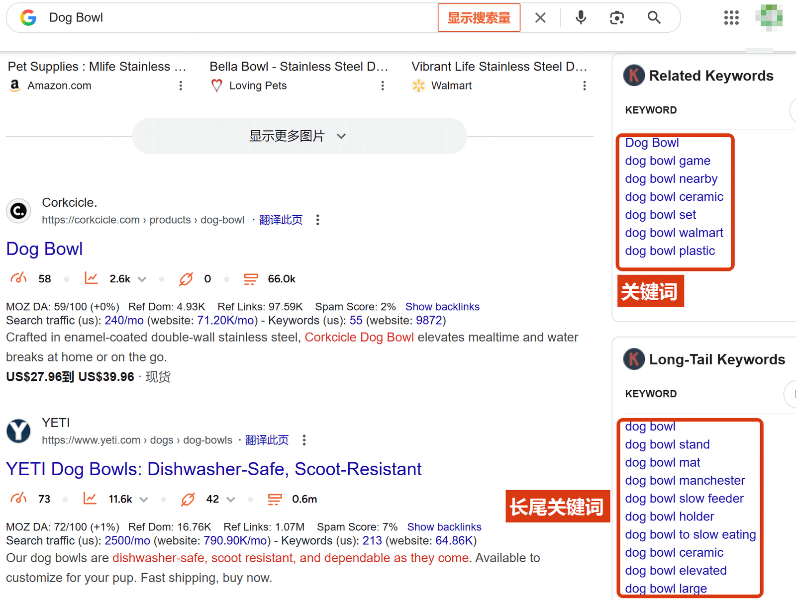
② Ubersuggest
这款插件的功能和Keywords Everywhere差不多。
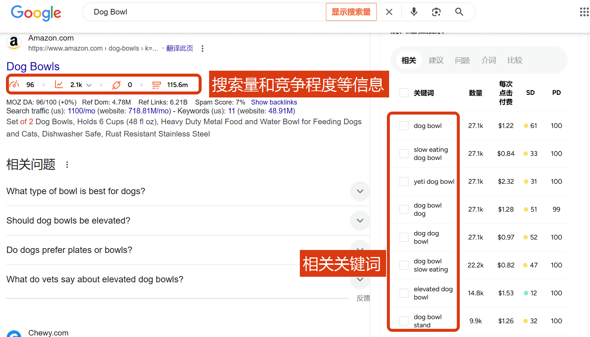
③ 其他工具
除此之外，还有其他一些：Google Keyword Planner，AnswerThePublic等，就不再介绍了。
二. 关键词实操
这部分内容建议观看视频，讲解更为详细。
2.1 梳理 挖掘关键词
方法一：关键词扩展
到SEMrush的页面，然后在上面的搜索框中输入关键词并搜索，这里以“Dog Bowl”为例。
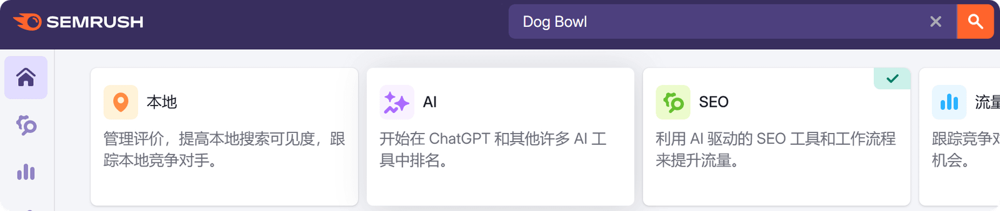
然后就出现了搜索结果。
① 搜索量：即该关键词被搜索的次数。（这里不同工具的统计方式不一样，作为参考即可）
② 关键词难度：即想要用户搜索该关键词排在搜索结果前面的难度。（范围0-100%）
③ 全球搜索量：我们可以多关注自己做的市场。
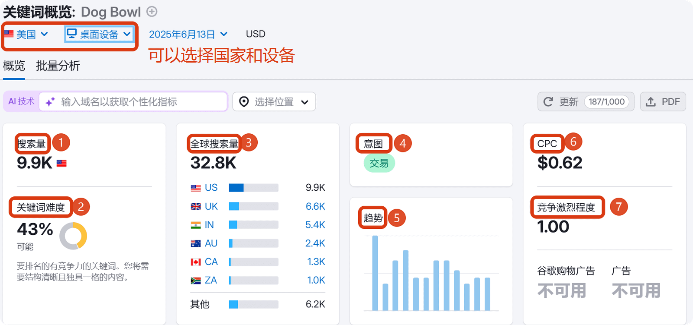
④ 意图：根据搜索相关关键词用户的行为划分为四种。
- Informational（I），是指用户搜索可能只是想寻找某个问题的答案或者某个事件的信息等等。比如dog commercials super bowl，搜索这个词的用户可能就只是想了解超级碗的内容。
- Navigational（N），搜索特定的网站或主体，品牌。比如用户搜索“Yeti dog bowl”，就是找这个品牌的狗碗，目标很明确。
- Commercial（C），有合作或者购买意向。比如用户搜索“Dog bowl with stand”，那么有很大概率他是想购买带支架的狗碗，不然很少会搜的这么详细。
- Transactional（T），基本上已经确定有购买意向，并且要展开购买行为。比如“Where to buy dog bowls”。
当然这四种只是作为一个参考的划分，我们可以根据这些意向作为筛选关键词的条件之一。
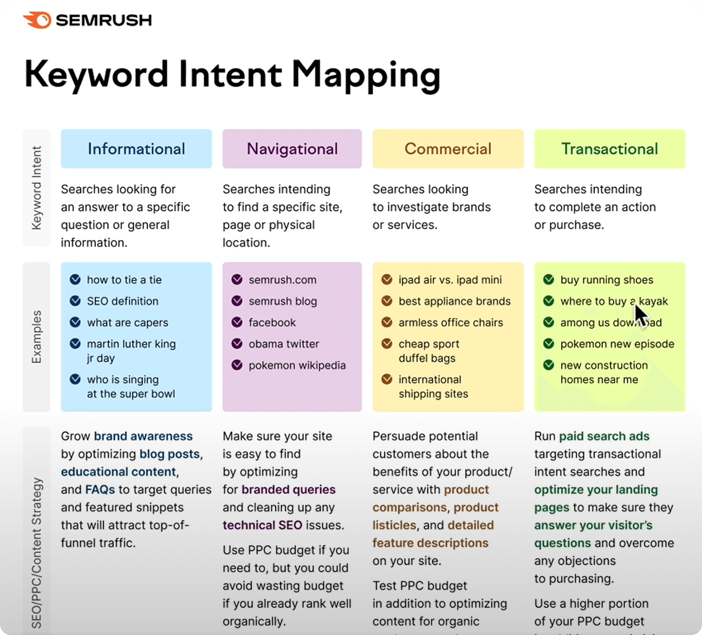
⑤ 趋势就是这个关键词在一段时间内的热度变化。
⑥ CPC，卖家愿意为这个关键词每次点击的平均出价。（如果你在某个关键词投放了广告，也可以作为参考，看看自己的价格相比如何。如果高了，是不是需要对广告做出优化。）
⑦ 这个关键词在PPC（按点击付费） 广告中的竞争程度，从0到1，1代表难度最大。
不同工具给出的结果可能会有不小的偏差，这可能因为依据不一样，但是作为基础的参考是完全有意义的。
在关键词概览的下面还有一个关键词意见模块，点击对应的查看全部即可看到更多的关键词。
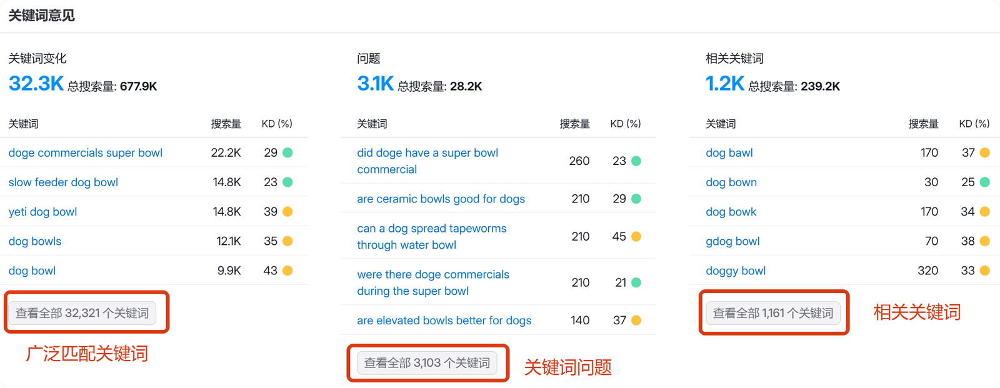
这里以相关关键词为例，点击【查看全部】。然后就到了相关关键词列表，在这里可以根据不同的条件对关键词排序和筛选。
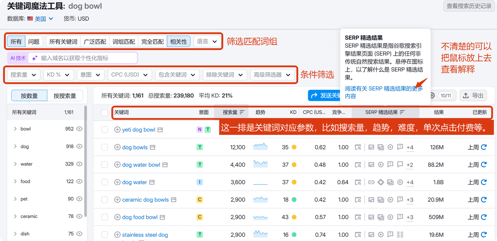
右边也可以选择把关键词导出到表格。
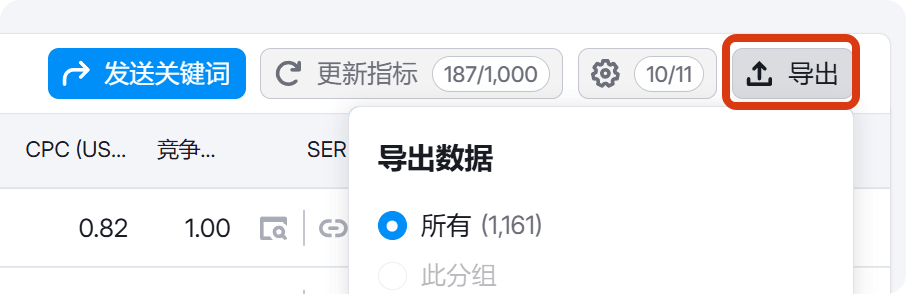
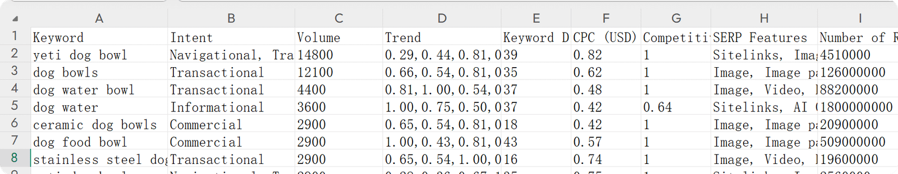
以上是第一种方法，通过一个关键词去扩展出更多的关键词。我们再看一下第二种找关键词的方法。
方法二. 抓同行的关键词
在谷歌直接搜索关键词，这里以“dog bowl”为例。
排除掉广告链接，可以把前三名的网址复制下来。
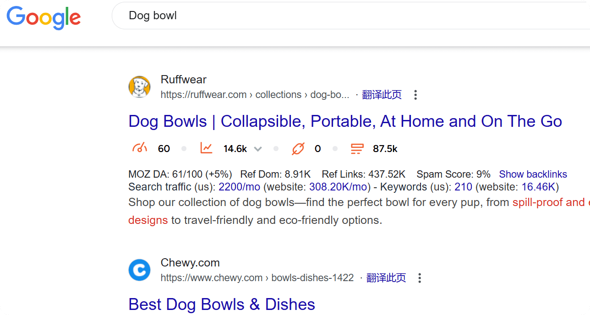
回到SEMrush，选择左边的域名概览，将网址粘贴到搜索框中搜索。这个功能主要是研究竞争对手网站的，这部分在后面的教程中再讲，这里就不拓展了，主要看一下它的关键词。
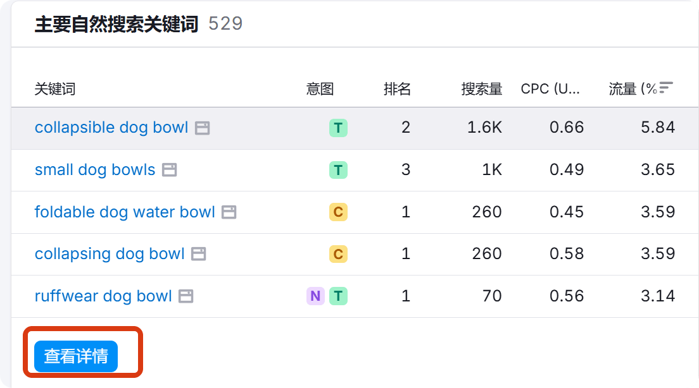
这里可以查看到同行网站的搜索关键词，也可以导出到表格中。
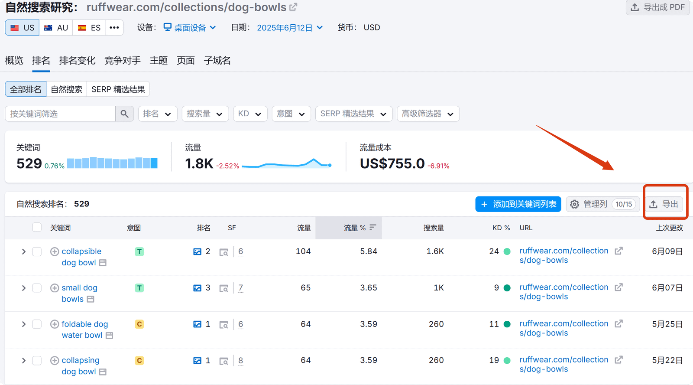
2.2 筛选关键词
通过上面两种方式，我们就可以梳理出更多的关键词，接着就是找出一些我们需要的关键词。一下一些准则可以作为参考：
- 确认目标用户需求，再选择相关的关键词。
- 关键词的搜索量尽量不要低于100，除非你的内容非常小众。
- 主关键词的难度尽量不要太大，尤其对于新网站和小网站。
- 搜索意图。如果你网页的主要内容是分享知识话题，可以多使用“信息I”类的关键词；产品测评，对比类，可以多使用“商务C”“交易T”类的词。
2.3 应用关键词
等关键词都筛选出来之后，就可以分布添加到网页的内容中了。（链接URL后缀，标题，SEO标题，描述，图片，Alt text等等）
这部分在上一节已经详细讲过了，可以点击下面按钮查看。
三. 总结和注意事项
- 定期审视和优化关键词，根据网站的关键词点击数据等情况做调整。比如，有些用户是通过其他关键词进来的，而你的网页上没有这个关键词，是否可以考虑加入。
- 关键词密度不要过大，不要逮着某1-2个关键词整个网页内容都是，把我们筛选出来的词合理分布。
- 关键词的位置很重要，尽量把你想要主打的关键词放在标题前面，因为搜索引擎更看重SEO标题描述，文章的各级标题等重要位置。
- 试着使用一些长尾关键词，内容要贴合关键词主题。
以上是关于关键词部分的一些分享和建议，后期如果有新的想法我也会及时更新，记得收藏关注。
© 文章版权归白小菌所有，🫰欢迎转发分享。未经允许请勿抄袭转载。